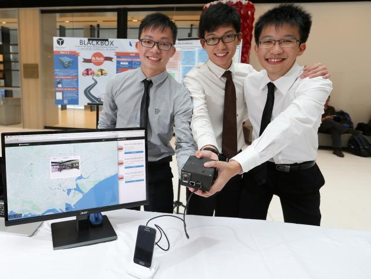

The glory of the week
Prototype by 3 young inventors takes top prize in codeXtreme App contest, Aug 12
Three incoming SMU School of Information Systems (SIS) students – Clarence Ngoh who will be joining SIS next week, Kong Yu Jian and Wong Wai Tuck who will both be entering SIS next year – have won the codeXtremeApps competition organised by Infocomm Development Authority of Singapore (IDA) and Information Technology Standards Committee (ITSC). Their invention was featured in The Straits Times on 12 August 2014.
This year's code::XtremeApps:: competition theme was "Smart Living - Build.Code.Play."Participants
were challenged to develop innovative applications by creatively integrating software and hardware
in their solutions. There were a total of 57 teams from private companies, research institutions,
start-ups and IHLs participated in the Open Category, and 12 teams were selected for the finals.
Four teams proudly represented Nanyang Polytechnic School of Information Technology in the competition.
Three of our teams (Spinning Geckos, Ezy-D and ShopALogic) managed to enter the finals for the Open Category,
and ShopALogic was awarded the Merit Award. The School of Information Technology was also awarded the School
Achievement Award, for having the most number of teams in the finals.
The students who made it into the finals are:
|
ShopALogic |
Spinning Geckos |
Ezy-D |
Check more details in the News article page